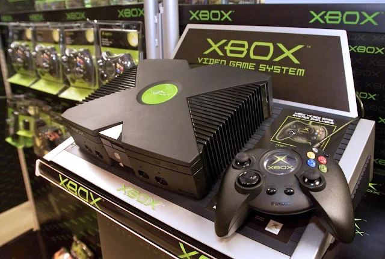
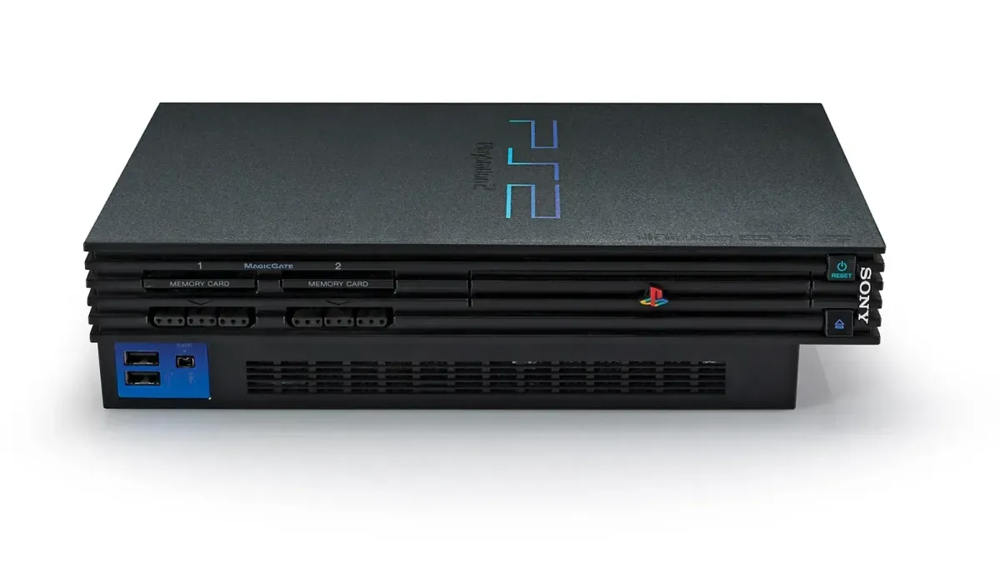
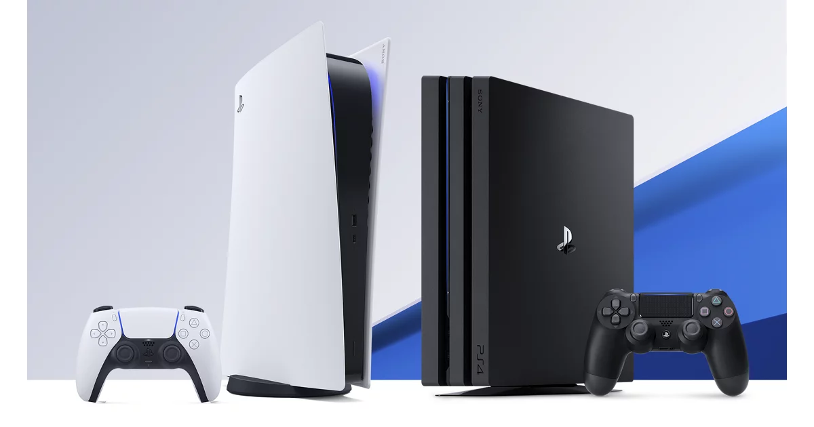

Anos 2000 – A Consolidação do 3D e o Avanço Online
Nos anos 2000, os consoles evoluíram drasticamente. A Sony lançou o PlayStation 2 (2000), que se tornou o console mais vendido da história. A Microsoft entrou na disputa com o Xbox (2001), trazendo o jogo online como grande diferencial com o serviço Xbox Live. Já a Nintendo apostou no GameCube, mantendo sua base de fãs fiel.
Essa década marcou a consolidação dos gráficos em 3D e da jogabilidade online. Franquias como God of War, Halo, GTA San Andreas, Metal Gear Solid e Resident Evil 4 definiram os padrões de qualidade da indústria.
“Os anos 2000 mostraram que os videogames deixaram de ser brinquedo para se tornarem entretenimento de massa.”
Anos 2010 – Realismo, Portabilidade e Streaming
A partir de 2010, os consoles alcançaram níveis cinematográficos de realismo, e os serviços online se tornaram padrão.
A Sony lançou o PlayStation 4 (2013), focando em gráficos, jogos exclusivos e comunidade online. A Microsoft apresentou o Xbox One (2013), apostando em integração com TV, Kinect e conteúdo multimídia. Já a Nintendo inovou com o Nintendo Switch (2017), combinando console e portátil num só aparelho.
Os jogos se tornaram experiências gigantescas: The Witcher 3, Red Dead Redemption 2, The Last of Us, Breath of the Wild e Fortnite marcaram a cultura pop.
A Chegada dos Streamings e da Geração Z Ao final da década, streamings de jogos como Twitch, YouTube Gaming e plataformas como Google Stadia mostraram uma nova direção para o futuro: jogar sem console físico, direto da nuvem.
Além disso, a cultura gamer cresceu como nunca antes, com eSports, jogadores profissionais, eventos internacionais, e um mercado bilionário.
Conclusão: De pixels a realismo, de cartuchos à nuvem A história dos videogames entre 2000 e 2020 mostra uma transformação tecnológica e cultural profunda. O que começou como diversão em casa passou a ser entretenimento global, com impacto social, econômico e artístico.
Prepare-se para a próxima fase — o futuro dos games está cada vez mais próximo da realidade virtual e da inteligência artificial!